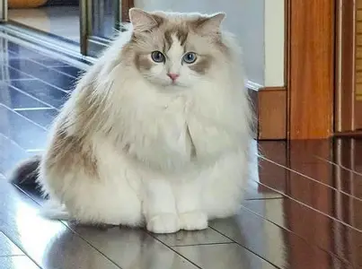
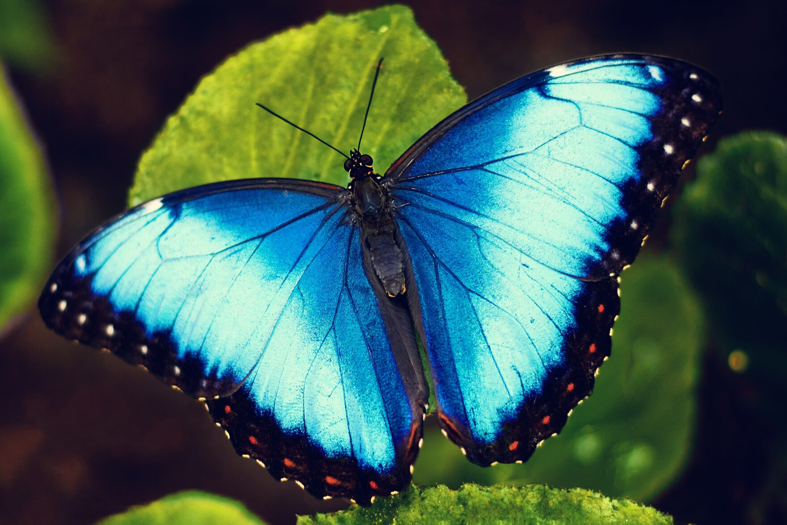
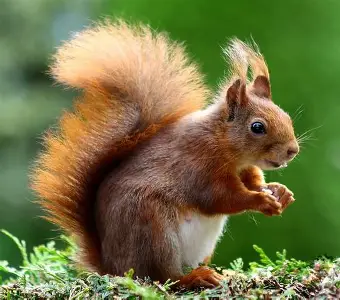

The cat (Felis catus), also referred to as the domestic cat or house cat, is a small domesticated carnivorous mammal.
It is the only domesticated species of the family Felidae.
Cats are generally fond of perching in high places.
Morpho species can be recognized by the bright blue color featured on the dorsal side of their wings.
The iridescent blue is caused by light reflection and interference from the layered scales on the wings surface.
Each scale has ridged stripes which cause this interference.
The red squirrel has a typical head-and-body length of 19 to 23 cm (7.5 to 9.1 in), a tail length of 15 to 20 cm (5.9 to 7.9 in), and a mass of 250 to 340 g (8.8 to 12.0 oz).
The long tail helps the squirrel to balance and steer when jumping from tree to tree and running along branches and may keep the animal warm during sleep.
The coat of the red squirrel varies in colour with time of year and location.